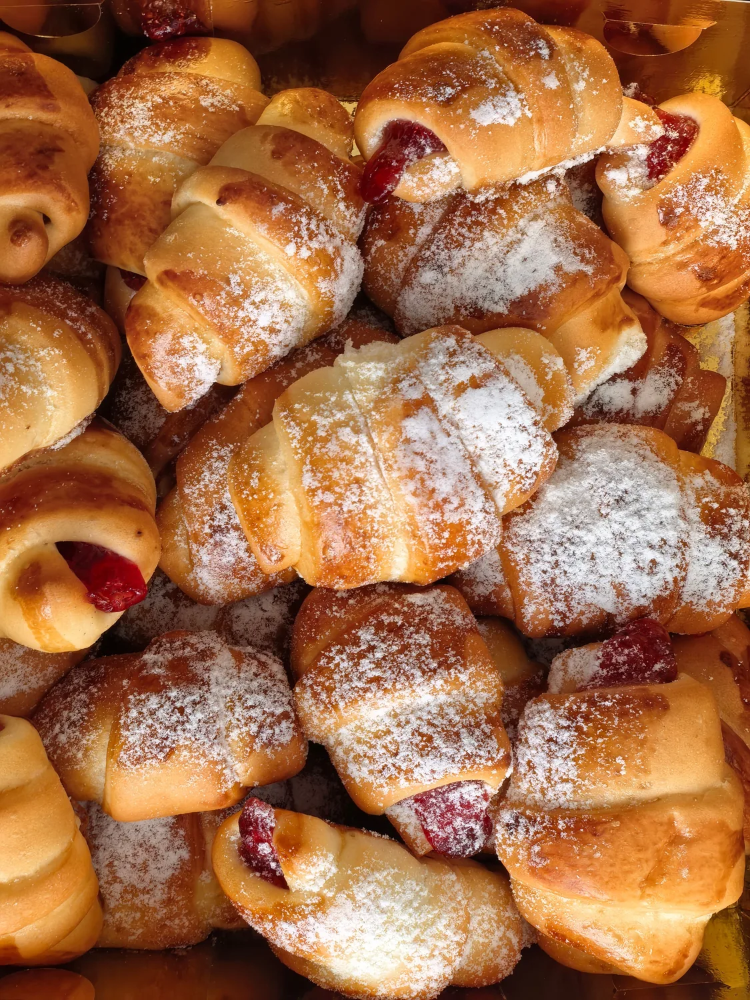
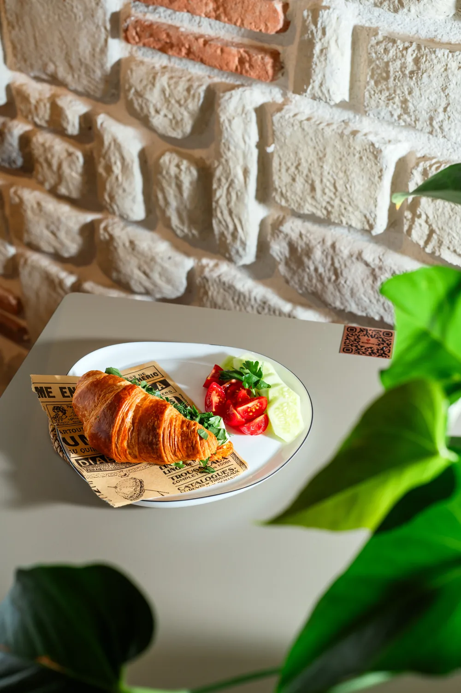
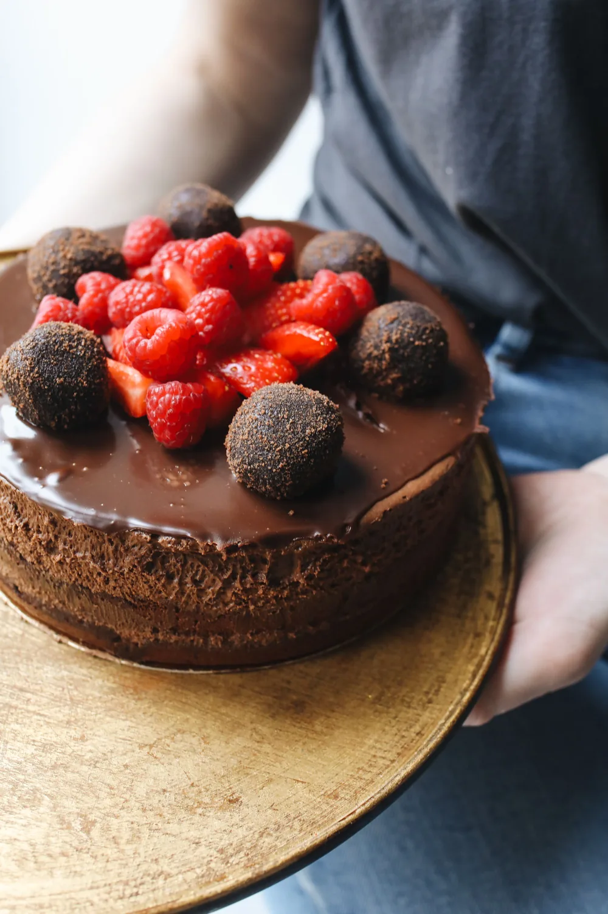

Klasszikus fehér kovászos
Ropogós héj, puha belső. Reggelire és a hétköznapokra.
Kenyér a hétköznapokra, péksütemény a reggeli mellé, torta az ünnepre. A napi készlet változik, a kedvencek délre elfogyhatnak.

Egész kenyérre legalább egy nappal korábban előrendelést is felveszünk.
Ropogós héj, puha belső. Reggelire és a hétköznapokra.
Telt íz, pirított magok, tartalmas szeletek.
A pultnál derül ki, mi került még a kemencébe.

Friss péksüteményekből kisebb, naponta változó választékot sütünk. Ha valamire biztosan vágysz, érdemes korán érkezni.

Pirítósok, szendvicsek és kávé várnak a kis reggelizőben. Tizenkét helyünk van; a reggeli a boltban fogyasztható.
Tortát előzetes egyeztetéssel, legalább egy nappal korábban kérhetsz. Írd meg, milyen alkalomra és mikorra szeretnéd, mi visszajelzünk a lehetőségekről.
Tortát rendelek